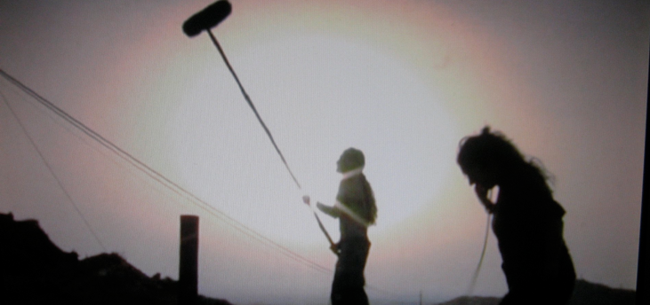

Lama Film


SYNOPSIS
An independent film producer in the U.S. is intrigued when he hears about an unfinished feature-length film, begun twelve years earlier in the Southeastern Spain by a group of valiant first-timers, most of whom had been quite successful since then. The crew were the best and brightest non-conformists who had just graduated from film school at the world-famous Centro Sperimentale di Cinema in Rome, or just begun work in Spain. The captain of the vessel was a young Spaniard named Alex Fortuna, disappeared from the map. The film “El Infierno Prometido” (The Promised Hell), which took its inspiration from the myth of Orpheus, mixed classical allusions and the everyday realities of a contemporary, yet ageless and unexpected rural Mediterranean world.
Production ground to an abrupt halt when financing suddenly ran out, and the 17,000 meters of film shot by Alex Fortuna and his troupe were forgotten in a dusty back storeroom at the legendary Roman film studio, Cinecittà.
In the summer of 2008, Patricia Hart, a writer friend of the American producer, travels to Italy in the company of a cameraman in order to interview the Italian co-producers of the film and keep a record of her investigation. Her hope is to find the forty-seven minutes of edited film that director Alex Fortuna had managed to put together in his vain attempt to finish his project.
Patricia decides to go Murcia, Spain with the quixotic goal of seeing if the long-interrupted picture can be finished. To this end, she interviews all of the cast and crew she can find, and visits the film’s locations to see what is unchanged enough to still use. Contradictory stories emerge as to Fortuna’s adventures and whereabouts, though eventually she finds he spent time in Mexico, where it turns out that he tried to remake the whole film from scratch, without telling a soul about his earlier, failed attempt.
But the real problem isn’t just finding Alex, but also confronting the past, in the form of this partially-materialized dream that could have been but never was. The question is grappling with Alex’s demons as he uses cinema as a metaphor for death and at the same time, as an inevitable synonym for life. After Patricia and all the rest have gone to hell and back retracing Alex’s steps, the problem is to bring the film back to the land of the living without looking back in a moment of doubt and losing it forever. The film uncovers the secrets of a mysterious land with its startling situations and anecdotes (illustrated with the documentary images that serve as counterpoint to the stylized sequence shots of the past filmed in 35mm) In the end, we are left with the words of poet, Pier Paolo Pasolini:
“Why make a work of art when it is so beautiful just to dream it”.
The unmaking of